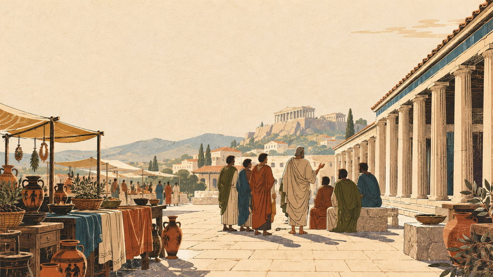
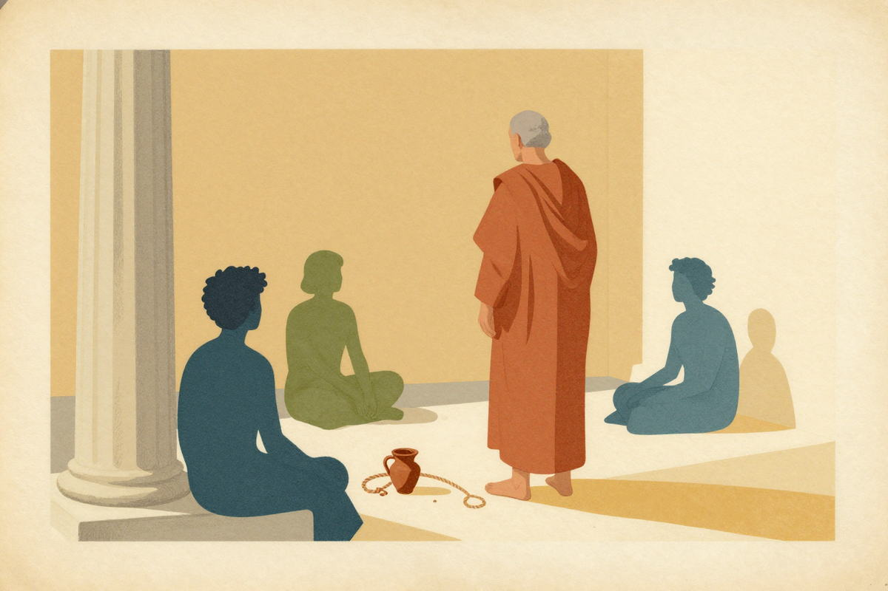
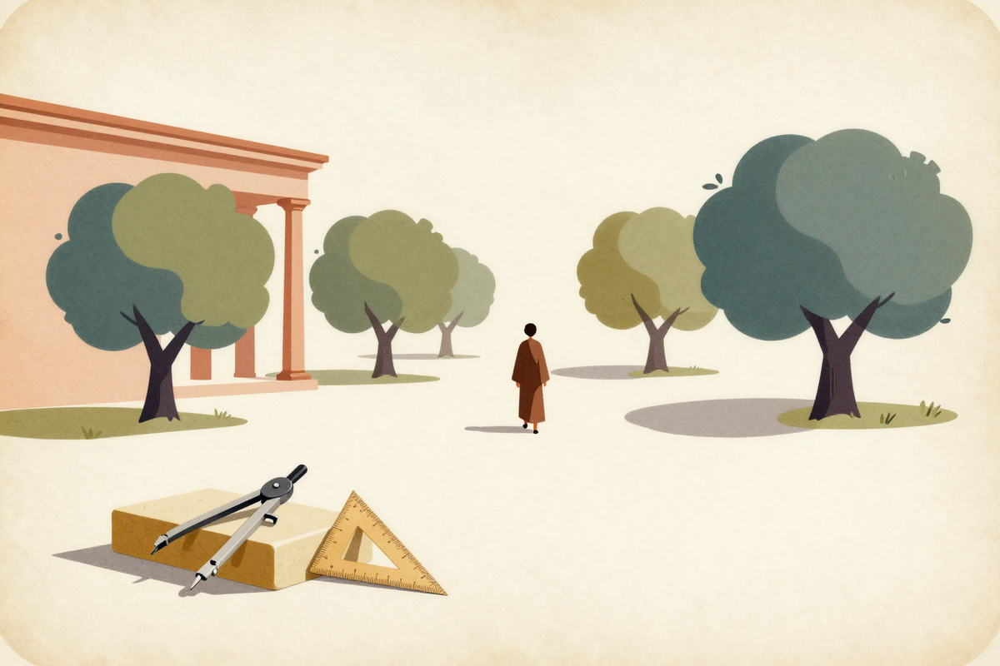
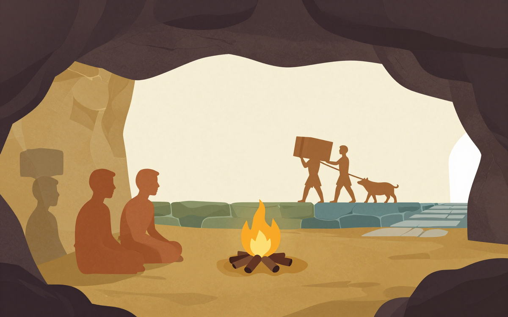
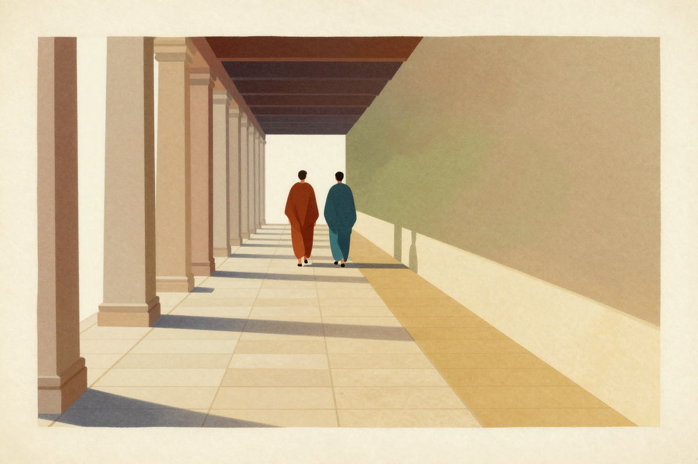
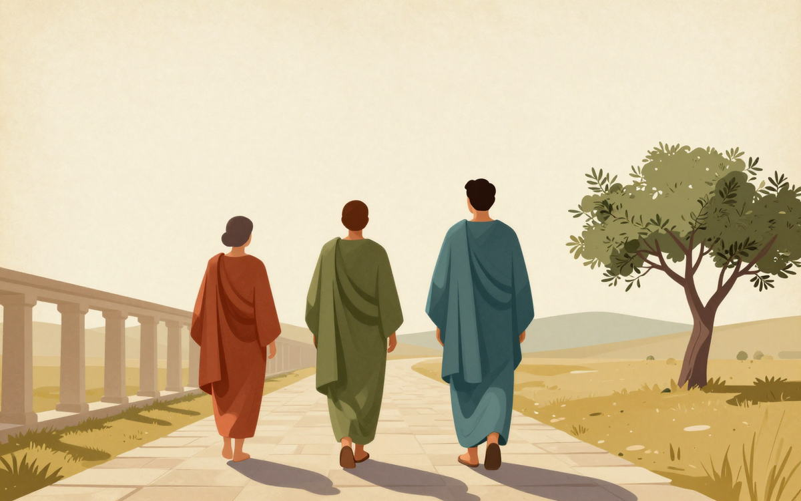

三个人，三种问法
苏格拉底 · 柏拉图 · 亚里士多德
一页读完，约 8–10 分钟
首屏插图为 AI 生成的想象场景，非史料。
敢问：何谓勇敢？
先选一个（或自己写一句）。选完才会有回话。
他不代你作答。他只再问你一句。
如此问法，两千四百年前，有一位老人，在雅典市集上日日为之。
他不著书，不收学费，只是问。
他叫苏格拉底
这一段追问的写法，参照柏拉图《拉刻斯篇》——那一篇通篇讨论「勇敢」，问到最后，并无结论。 这不是失手，是他有意如此。史料
第一站
雅典市集
苏格拉底
约前 470 — 前 399

1一个问题
公元前 399 年的雅典，市集叫阿戈拉——买菜、闲谈、传消息、议政事，都在那里。苏格拉底便在这里与人攀谈。
他其貌不扬，一身旧袍，赤足而行。他不教人发财，也不教人胜诉。他问的是那种你从未想过、一经追问便答不上来的问题：
勇敢是什么？
正义是什么？
「好」是什么？
你凭什么说你知道？
2他只做了一件事：问
他不是在考较你。他常常先承认自己也不知道。他的动作极简单：
且看：他不曾给你答案，你的答案却因你自己，敲得更结实了。
《申辩篇》中他说，别人不懂却自以为懂，而他至少知道自己不懂——这便是他觉得自己「不比别人差」的全部底气。 史料（通行译法概括）
3他没有解决的事，和他付出的代价
他未曾解决的：一生之中，没有为任何一问给出最后的答案。那些对话往往是散的，没有结论。
他的代价：他问得太多，开罪了城中有名望的人。公元前 399 年，他被控不敬神与败坏青年，判处死刑。他本可逃走——朋友已为他安排妥当——他没有走。他说：不能因旁人待我不义，我便行不义之事。
他没有留下一个字。他写的书，我们一本也没有。
审判的经过、拒绝逃亡的缘由，主要见于他的学生柏拉图所写的《申辩篇》与《克里同篇》。史料
4带走一句话
你以为你懂，可能只是你还没被问过。
讲给同学听
用你自己的话说说——苏格拉底何以宁可赴死，也不肯停止发问？
还有一件必须知道的事：我们认识的苏格拉底，是他的学生写下来的他。柏拉图写他，色诺芬写他，喜剧作家阿里斯托芬在戏里，把他写成一个滑稽的人物。三个版本并不一样。
所以历史学家至今仍在争：那个真实的苏格拉底，究竟什么样？
日后你读到的每一句「他说」，都值得多问一句：这是谁记下来的。史料
第二站
学园
柏拉图
约前 427 — 前 347

1一个问题
请先答我一问：你画的圆，没有一个是真的。那么你何以知道，「圆」是什么？
2他只做了一件事：给「真的东西」另建了一层
柏拉图是苏格拉底的学生。他承下老师的问题，另给了一个答案：
我们所见的一切，都只是「影子」
真正实在之物，在另一边
他最著名的比喻是洞穴：有一群人，自幼被缚于山洞之中，只能看面前的墙。身后有火，火与墙之间有人举着器物走过——墙上便是那些器物的影子。这些人一生只见影子，便以影子为全部的真实。

- 他们自幼被缚，只能看面前的墙。
- 身后有火，火与墙之间有人举着器物走过。
- 墙上于是有了影子——他们以为那就是全部。
- 若有一人被解开，转过身来，火光会刺痛他的眼。
- 他走出洞口，起初什么也看不见，只觉得刺目。
- 最后他看见了太阳——也才明白，先前所见的都只是影子。
- 若他再回到洞里，眼睛还没适应黑暗，会被笑「上去一趟，把眼睛弄坏了」——甚至会被杀掉。
最后这一步出自《理想国》517a。Shorey 的注本在这一句下原注：「明显影射苏格拉底的下场」——这一笔把第二站接回了第一站。史料
再说那个圆：你画的都不完美，可你心中另有一个「完美的圆」。柏拉图说：那个「完美的圆」才是更真实之物，你画的那些，不过是它的影子。
「理念／形式」很容易被误读成「想法」。它不是「我脑子里的一个念头」，而是让一个东西成为这种东西的那个标准。类比
3他没解决的事
他最出色的学生，不接受这个答案。（下一站就是他。）
他也不直接给结论：他写了三十余篇对话，里面的人一直在争，很多时候要你自己决定谁对。
他还欠着一笔账：他笔下苏格拉底永远是主角——而那个苏格拉底，或许既是他的老师，也是他自己的口。
柏拉图一生写了三十余篇对话录，苏格拉底几乎都是主角。于是有了那个著名难题——哪些话是苏格拉底说的，哪些是柏拉图借他的嘴说的？史料
4带走一句话
你画的圆都不完美，可你为什么知道什么是圆的？
讲给同学听
不看网页，用五句话把洞穴比喻写一遍。
5且说一句：传闻如何成了常识
你多半听过「柏拉图学园门口写着：不懂几何的人不许进来」。此语流传极广，许多书都在引。
实情是：这是一个不可核实的故事；它出现之时，距学园建立已晚约七百年。
所能见到的最早记载，是公元六世纪一位名叫 Elias 的学者，为亚里士多德的书作注疏时写下的（《Eliae in Porphyrii Isagogen et Aristotelis categorias commentaria》, CAG XVIII.1, 1900, p. 118.13–19）。希腊原文 Ἀγεωμέτρητος μηδεὶς εἰσίτω 是有据的，但「门口刻着」没有据。
此处不写成「学园门口刻着……」，而写成「后来的人说门口刻着……」——这是全页「标注不确定」的第一个示范。传说
第三站
吕克昂
亚里士多德
前 384 — 前 322

1一个问题
你何以知道，明日太阳仍会升起？
三答之中，藏着三种不同的「知道」。逐一点开看看。
因为它昨天升了，前天也升了
这是归纳：从见过的许多次，推到没见过的那一次。它极有用，却不是必然——太阳也可能有不再升起的一天，只是我们还没见过。
因为地球在转动，这是物理规律
这是推理：从一个更一般的道理，推出这一件事。它比归纳硬，但那个「更一般的道理」本身，仍要靠观察与检验才立得住。
我不知道；但我知道它很可能升
这是知道自己不知道——苏格拉底会赞成这一答。知道自己站在哪一级台阶上，比站在台阶上更重要。
2他只做了一件事：不再问「完美的圆在哪」，而是去看、去数、去分类
亚里士多德是柏拉图的学生，在学园待了约二十年。老师去世之后，他做了老师未曾做的事：
他去观察活物。他描述、分类了几百种动物，研究它们的器官、习性与繁殖。他相信：要认识一物，先去看它实际如何，而不是先想它应当如何。
他还做了一件影响两千年的事：把「怎样推理」变成一门可学的技艺——三段论。
换成「有些人会死」会怎样？
「有些人会死。苏格拉底是人。所以苏格拉底会死。」——前两句都对，结论却推不出来。三个人里，只有一个人会死，苏格拉底未必是那一个。
这正是三段论要管的事：不是问你「对不对」，而是问这个「所以」站不站得住。
他约十七岁进学园，约前 335 年自建吕克昂。他惯于边走边讲，所以后来的人称他「散步的哲学家」。传说
「散步的哲学家」（peripatetic）这一名称的由来，古人说法不一。
他还在约前 343 年做过亚历山大的老师。史料（古代记载中传说成分不少）
3他错了——而且错得很具体
这是这一站最该记住之处：
地球是宇宙的中心。
错。
重的物体落得比轻的快。
错。
万物都有目的。
（石头往下掉，是因为它想回到地面）
错。
一个人，可以在方法上对，在结论上错。他「去看、去分类、要求证据」的方法留了下来，那些具体结论，被后人一一推翻。他的书后来在欧洲一度散失，靠阿拉伯语世界保存、注释，再译回欧洲。
4带走一句话
不要只问世界应当如何；去看它实际如何。
5那句名言，是如何被制造出来的
你多半听过：「吾爱吾师，吾更爱真理。」它被挂在亚里士多德名下，传了两千多年。实情分三层——请看这三张卡，顺序就是时间。
前 4 世纪初
…σμικρὸν φροντίσαντες Σωκράτους, τῆς δὲ ἀληθείας πολὺ μᾶλλον…
“you … will give little thought to Socrates and much more to the truth”
柏拉图《斐多篇》91c · 说话的是苏格拉底
英译 Harold North Fowler
前 4 世纪中
“…specially as we are lovers of wisdom: for since both are dear to us, we are bound to prefer the truth.”
中文大意：我们既是爱智慧的人；两边都可爱，但我们应当选择真理。
亚里士多德《尼各马可伦理学》I.6
Bekker 编号 1096a11–15
英译 D. P. Chase（Project Gutenberg #8438）
中世纪
Amicus Plato, sed magis amica veritas.
「柏拉图是我的朋友，但真理是更好的朋友。」
被归到亚里士多德名下——
其实是对 1096a11–15 的改写
须留意：他要批评的「理念论」，正是他的师友提出的——说这句话，于他是有代价的。
那么这句话是假的么？不是。它抓住了真东西：亚里士多德确在批评自己的老师，他也确实说了「应当选择真理」。但它不是他的原话——是后人替他把话说得更漂亮，也更好记了。
好记 · 好听 · 能站队
三样齐了，一句话便能活两千年
反过来，日后你听到一句名言，就该问这三件事：它最早是谁说的？它原来有多长？是谁把它磨得这么好记的？
讲给同学听
不看这一页，把这句话的三层来历讲给同桌听：最早是谁说的？后来谁写了什么？最后变成了什么？
第四站
今天
三个人的方法，今天还在你手里
你正在做的事
追问「你这句话究竟是什么意思」
—— 苏格拉底的方法
你正在做的事
用模型、用数学，去描述看不见的东西
—— 柏拉图的方法
你正在做的事
观察、分类、要求证据、寻找反例
—— 亚里士多德的方法
最后说一句实话：这三个人，谁也不曾「全对」。苏格拉底没有给答案；柏拉图那个「另一个世界」，连他自己最出色的学生都不接受；亚里士多德的地心说错了。他们留下来的不是答案，是三套提问的方式。

收束
三问对照
什么是真的 · 怎么才能知道 · 该怎么活
← 左右滑动，看三栏 →
| 三问 | 苏格拉底 | 柏拉图 | 亚里士多德 |
|---|---|---|---|
| 什么是真的 | 先别急着说「真的」；先说说你这个词，是什么意思。 | 我们看见的是影子；更真的是影子背后的原型。 | 真的东西就在这些东西里，去看、去分类便知。 |
| 怎么才能知道 | 靠对话：一个定义，加一个反例，反复地敲。 | 靠推理与数学：几何式的必然。 | 靠观察与归纳：看足够多次，并说明为什么。 |
| 该怎么活 | 德性即知识：没有人故意作恶，作恶是因为不知道。 | 灵魂里各部分各就各位，就是正义。 | 德性是练出来的习惯：勇敢在鲁莽与怯懦之间。 |
换你更同意谁？
逐一点开。要看的不是对错，是他们各自的代价。
什么是真的
你说的「真的」，究竟指什么？
苏格拉底
代价：问到最后，他没有给出任何答案。
柏拉图
代价：他最出色的学生，不接受这个答案。
亚里士多德
代价：他确实看了、也分了，可地心说这类结论，错了。
怎么才能知道
你凭什么说你「知道」？
苏格拉底
代价：这样的对话，常常没有结论。
柏拉图
代价：那个「另一个世界」，无法被检验。
亚里士多德
代价：归纳出来的，也可能是错的——「重物落得快」就是。
该怎么活
怎样才算一个好人？
苏格拉底
代价：他没能说服城邦，反被处死。
柏拉图
代价：这要靠一个「另一个世界」作担保。
亚里士多德
代价：什么算「中间」，常要凭判断，一不小心就成了「凡事别走极端」的和稀泥。
自测
十二问
先答，再看。答错不算坏事——知道错在哪里，正是这一页想教的事。
苏格拉底一生未曾著书。
苏格拉底被判死刑，罪名是什么？
「不懂几何者不得入内」这个故事，比学园建立晚了大约多少年？
洞穴比喻出自柏拉图哪一部书？
「吾爱吾师，吾更爱真理」是亚里士多德的原话么？
这句话最早的样子，出现在谁口中？
亚里士多德做过谁的老师？
亚里士多德在学园待了多久？
举一个亚里士多德错得很具体的地方。
三个人里，谁最强调「去看、去分类、要证据」？
（开放）倘若苏格拉底今日在你班上，他第一个会问什么？
（开放）「知道自己不知道」，算不算一种本事？为什么？
最后一件事
讲给同学听
能讲出来，才算真的读懂了
一 · 用一句话说清苏格拉底与柏拉图的分别
二 · 不看这一页，把洞穴比喻讲给同桌听
三 · 举一个你自己的例子：什么时候你「以为自己懂」，其实只是没被问过？
来源，与不确定清单
这一页上的每个断言，都标了等级。凡有据可查的，出处列在下面；凡不确定的，正文里已写明「传说」或「不可核实」。
- 史料柏拉图《拉刻斯篇》——通篇讨论「勇敢」，最后没有结论（第 0 节那段追问的写法参照此篇）。
- 史料柏拉图《申辩篇》《克里同篇》——苏格拉底受审的经过，以及他拒绝逃亡的理由。
- 史料柏拉图《理想国》——洞穴比喻（卷六末至卷七初）；灵魂三部分（卷四）。
- 一手柏拉图《斐多篇》91c——最早的「多想真理，少想我」（Perseus 校勘本中该句落在 91c）；希腊原文与 Harold North Fowler 英译。
- 一手亚里士多德《尼各马可伦理学》I.6（Bekker 1096a11–15）——「两边都可爱，但我们应当选择真理」；英译 D. P. Chase（Project Gutenberg #8438）。核验记录：#8438 全文不含 obligatory / closest / personal ties 等词，故上一版混入的另一译本句子已撤换。
- 一手柏拉图《理想国》517a——回到洞里的人被嘲笑、甚至被杀；Shorey 注本注明此处影射苏格拉底的下场。
- 传说「不懂几何者不得入内」——最早见于 Elias 对《范畴篇》的注疏（Eliae in Porphyrii Isagogen et Aristotelis categorias commentaria, CAG XVIII.1, Berlin 1900, p. 118.13–19），比学园建立晚约七百年。
- 传说「散步的哲学家」（peripatetic）这一名称的由来，古人说法不一。
- 说明本页所有插图（首屏、三站站头、洞穴、三人合图）均为 AI 生成的想象场景，依据正文描述绘制，不是史料、不是文物照片；首屏由外部通道生成，其余由本机免费额度通道生成（模型 z-image-turbo），生成日期 2026-10-05。
- 传说拉丁格言 Amicus Plato, sed magis amica veritas——常被归到亚里士多德名下，实为对 1096a11–15 的改写。
不确定的地方，明写在此——不确定就标注，核实了就改写：
一、学园门楣题词是传说，不是事实；希腊原文有据，「刻在门上」没有据。
二、那句名言不是原话；它是三层压缩的结果，年份与说话人都与通常的印象不同。
三、已结清：Project Gutenberg #8438 的译者为 D. P. Chase。上一版这里写的是「未能核实，故不写译者名」；核实之后，正文引注已改成真名。这一步本身就是这一页想教的事——不确定 → 去核 → 变确定。
获取通道与日期：本页外部信息均经本机官方 API 通道取得（Wikipedia 正文经 api.wikimedia.org；《尼各马可伦理学》英译经 Project Gutenberg 本机直连），取用日期 2026-10-05。各句的等级标记即为其可靠度，请照此转述。